Unit tests in Java using JUnit¶
Once the test cases have been designed, we start testing our application. In our case, we are going to use JUnit, a Java library for unit testing that also shows test reports that help us decide if we need to change the original code or not.
1. Creating the test folder¶
For instance, let's create a new Java project called PersonTest. Then, create a new package called person.types and place this Person class in it:
package person.types;
public class Person
{
protected String name;
protected String idCard;
public Person()
{
name="";
idCard="";
}
public Person(String name,String idCard)
{
this.name=name;
this.idCard=idCard;
}
public String getName() {
return name;
}
public void setName(String name) {
this.name = name;
}
public String getIdCard() {
return idCard;
}
public void setIdCard(String idCard) {
this.idCard = idCard;
}
@Override
public boolean equals(Object p)
{
return (this.idCard.equals(((Person)p).idCard));
}
@Override
public String toString()
{
return name + " " + idCard;
}
}
Now, we are going to learn how to create a unit test associated to this class, and define some test cases. First of all, it is recommended to create an additional source folder to place all our tests in, so that we don't mix them with the original source code. We can create a new directory called tests and right click on it, then we choose Mark Directory as > Test Sources Root.
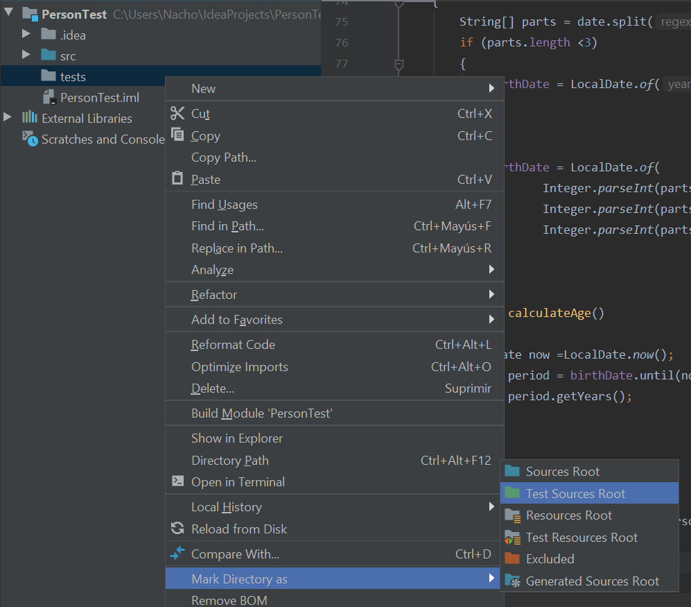
From now on, every test that we create will be automatically placed inside this source folder, with the same package name than the class that is being tested.
2. Creating test classes¶
In order to create a new unit test over Person class, place the cursor in the class name to be tested (Person, in our case) and press Alt + Enter. In the context menu, choose Create test.
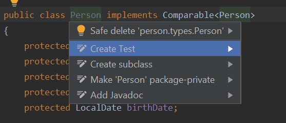
Then, a new dialog will appear to specify the contents of this unit test:
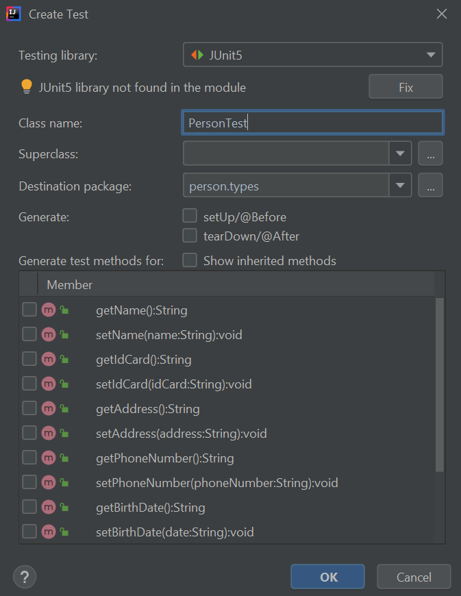
In the dialog that will be shown, we can:
- Specify JUnit version. We will use the last one, which is version 5, and it corresponds to JUnit Jupiter. If a message appears indicating that JUnit 5 library not found in the module, we can press the Fix button and automatically download and add the library to the project:
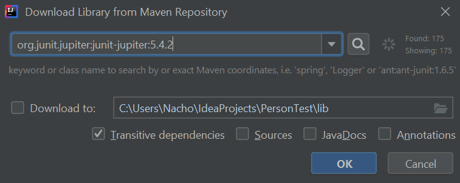
- We can also change the test class name and/or package name for this test class (although it is not recommended, nor usual)
- Finally, we can also choose which methods from the original class are going to be tested. We don't need to check any method now if we don't know which one(s) we need to test. We can add as many as we want later.
So, for now, we leave the default options of this dialog and click on the OK button. A new class called PersonTest has been created in the person.types package inside the tests source folder.
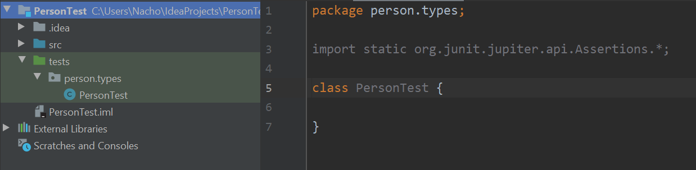
3. Adding test methods to the test class¶
Now, let's try to define a test method. For instance, let's create a test method for the getName method of Person class. To do this, we go again to Person class name, press Alt + Enter keys, and then choose the method(s) that we want to add to the test:
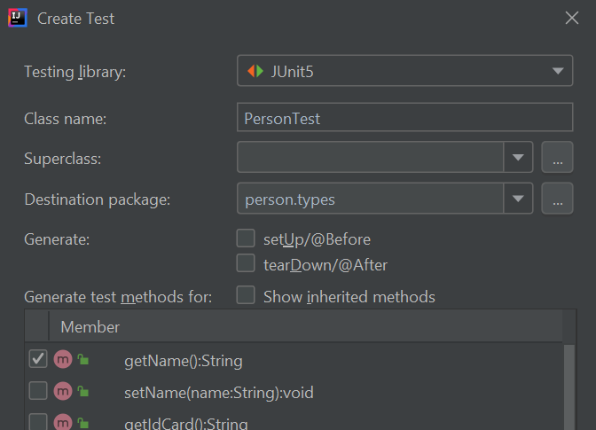
IntelliJ will ask us to confirm that we want to update existing test class, then we can proceed. Any old content of this class will be preserved, and then new method(s) will be added.
package person.types;
import org.junit.jupiter.api.Test;
import static org.junit.jupiter.api.Assertions.*;
class PersonTest
{
@Test
void getName()
{
}
}
In order to test this method, we can, for instance, create a new Person object with a given name, and then check if this name is the one that we expect. For this checkings, we can use assertXXXXX methods that are available through static import of org.junit.jupiter.api.Assertions package:
package person.types;
import org.junit.jupiter.api.Test;
import static org.junit.jupiter.api.Assertions.*;
class PersonTest
{
@Test
void getName()
{
Person p = new Person("James", "11223344A");
assertEquals("James", p.getName());
}
}
Let's explain this code more in depth:
@Testannotation indicates that the method above is a test. The method header has been automatically generated by JUnit.- In this test we create a
Personobject with the (second) constructor - Next, we check if name attribute is the one that we expect. We use
assertEqualsmethod with two arguments (expected result and actual result), to evaluate with the corresponding getter if the attribute has the expected value after creating the object. This method is inorg.junit.jupiter.api.Assertionsclass in JUnit 5. There are also some other useful methods, such asassertTrue,assertFalse(we will see an example of these two methods later),assertNull, orfail, which can be used to automatically emit a failure according to some condition(s).
We can add as many assertions as we want in a test method. For instance, we can also check if name is not null before checking if it is "James":
@Test
void getName()
{
Person p = new Person("James", "11223344A");
assertNotNull(p.getName());
assertEquals("James", p.getName());
}
4. Running tests¶
If we want to run this test class, we can right click on it in the left panel and choose Run PersonTest.
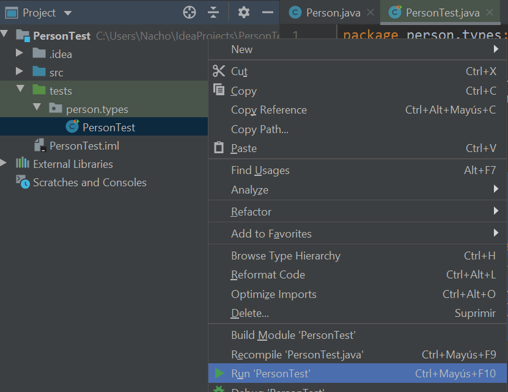
Then, we will see a JUnit panel with the results of every test contained in the test class:
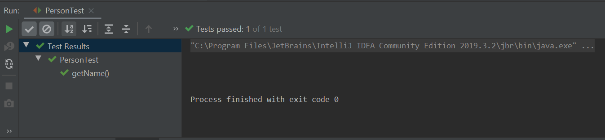
If every test has been successful, then we will get a green icon, otherwise we will see an error icon next to each test method that has failed.
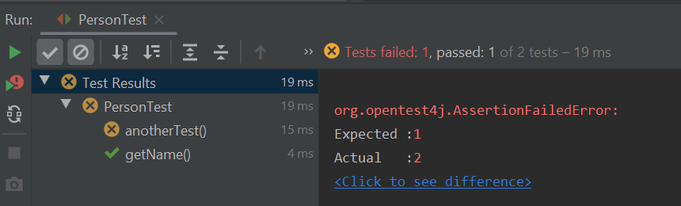
5. Initializations and closings.¶
If we need to have some previously initialized data before starting the tests, or some conditions previously established, we can use the annotation @BeforeEach. We can also use the annotation @AfterEach to close or free some resources after the tests have been performed.
There is a method called setUp that is usually employed to initialize data for every test case before they are launched. So we can use the annotation @BeforeEach with this method to initialize some data. This method can be added from the test dialog in IntelliJ, when we add new test methods to the test class. For instance, we can initialize a shared Person object for all the test methods, and use it in every test method that we want. For instance, here we instantiate a Person object in the setUp method, and use it in the getName test method and also in the equals test method (we consider that two Person objects are the same if they have the same ID card):
class PersonTest
{
Person person;
@BeforeEach
void setUp()
{
person = new Person("James", "11223344A");
}
@Test
void getName()
{
assertNotNull(person.getName());
assertEquals("James", person.getName());
}
@Test
void testEquals()
{
Person testPerson = new Person("Test2","1111112K");
testPerson.setIdCard(person.getIdCard());
assertTrue(person.equals(testPerson));
testPerson.setIdCard("222222");
assertFalse(person.equals(testPerson));
}
}
There are also some other common methods that can be used, such as tearDown along with @AfterEach annotation to free resources for every test after their execution. Again, this method can be added from the test class dialog in IntelliJ.
6. Checking code coverage¶
We have checked two methods so far, and we have added some different kinds of asserts in each one to determine if they work properly or not with different inputs. But IntelliJ can also show how much of the original code has been tested. This feature is called code coverage, and we can get to it by right clicking on the test source file and choosing Run XXXXX with Coverage, being XXXXX the class name.
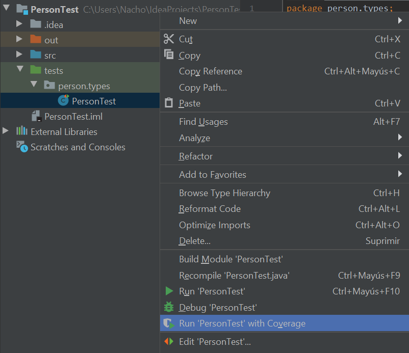
Then, a new panel with some stats will appear:
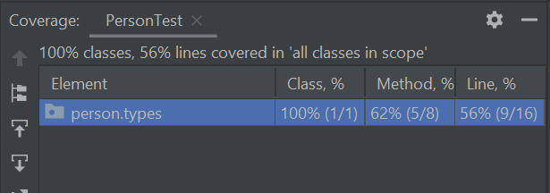
According to these stats, our test covers 62% of Person class. If we edit this class, we can see green, vertical bars in the left margin for lines of code that are being executed, and red, vertical bars for the lines of code that no test is exploring yet.
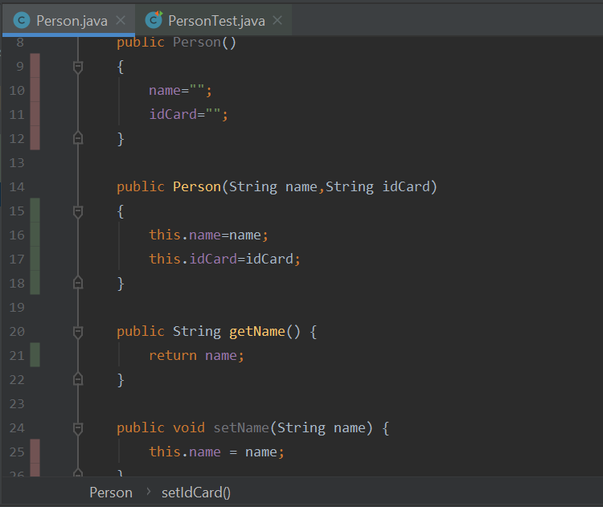
Exercise 1
Implement the tests for every method of Exercise 4 of this document. Use a project called SalesList for this purpose, with separate source folders for the original code and the classes.
Exercise 2
Create a new project called Access. Implement a class called Access with a method called validUser(String user,String pass) that returns true if user is valid and false if it is not. In order for a user to be valid, it must meet the following conditions:
- user parameter must start with a letter.
- user parameter must have a length between 7 and 10 characters.
- Password must have a minimum length of 10 characters, and it must have at least one letter and one number.
Design the test cases using the technique of the equivalent partition, and then implement these test cases with JUnit.
Exercise 3
Add a new method to the Access class: boolean register(String user, String pass) that will register the user. The registration will consist in adding the user to a map. There will be a maximum of 10 allowed users in the map, so that if we exceed this limit, the method will return false. If the registration is correct, it will return true. Also, if a user with the existing name already exists in the map, it will return false. You are also asked to implement the tests in JUnit.